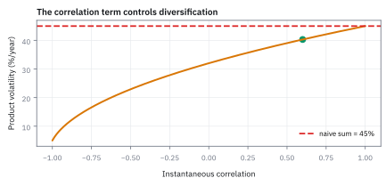
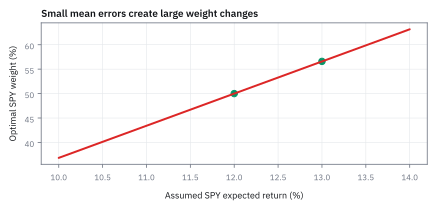

12.5 Markowitz Portfolio Selection
ผลตอบแทนของส่วนผสมเป็นค่าเฉลี่ยถ่วงน้ำหนัก แต่ความเสี่ยงต่ำกว่าค่าเฉลี่ยเสมอ ช่องว่างนี้ทำให้ส่วนผสมที่ดีที่สุดเรียงเป็นเส้นเดียวคือ efficient frontier และเมื่อมีเงินสด ทุกคนควรถือพอร์ตเสี่ยงหน้าตาเดียวกัน
แบบจำลองรายปีที่ใช้ทั้งหน้า (สมมติ): หุ้นคาดหวัง 12% ความผันผวน 20% พันธบัตรคาดหวัง 6% ความผันผวน 10% correlation 0.30 และเงินสดได้ 2% แน่นอน ผลตอบแทนส่วนเกินเงินสดต่อความผันผวนหนึ่งหน่วย (Sharpe ratio) ของหุ้นคือ 10%/20% = 0.50 ของพันธบัตรคือ 4%/10% = 0.40 ผู้จัดการกองทุนคนหนึ่งบอกว่า “หุ้นคุ้มกว่าต่อหน่วยความเสี่ยง ใครอยากได้ Sharpe สูงสุดก็ถือหุ้นล้วน แล้วค่อยลดความเสี่ยงด้วยเงินสด” ถูกไหม
ลองตอบก่อนเปิดเฉลย
ไม่ถูก ส่วนผสมหุ้น 43.18% พันธบัตร 56.82% ได้ Sharpe 0.5645 สูงกว่าหุ้นล้วน แค่ย้ายหุ้น 5% ไปพันธบัตร Sharpe ก็ขึ้นจาก 0.50 เป็น 0.5064 แล้ว เพราะพันธบัตรที่ correlation กับหุ้นแค่ 0.30 ลดความผันผวนได้มากกว่าผลตอบแทนที่เสียไป เงื่อนไขจริงคือ Sharpe ของพันธบัตรต้องเกิน $0.30\times0.50=0.15$ ไม่ใช่ต้องเกิน 0.50
ภาพรวมก่อนลงสูตร
Harry Markowitz ตั้งคำถามในปี 1952 ว่า ถ้าวัดความเสี่ยงด้วย variance พอร์ตที่ดีที่สุดหน้าตาเป็นอย่างไร คำตอบเริ่มจากความไม่สมมาตรข้อเดียว: ผลตอบแทนคาดหวังของส่วนผสมคือค่าเฉลี่ยถ่วงน้ำหนักของสองตัวพอดี แต่ความผันผวนของส่วนผสมต่ำกว่าค่าเฉลี่ยถ่วงน้ำหนักทุกครั้งที่ correlation ต่ำกว่า 1 เส้นของส่วนผสมทั้งหมดจึงโค้งไปทางซ้าย ครึ่งบนของเส้นนี้คือเมนูของพอร์ตที่ไม่มีพอร์ตไหนชนะได้ทั้งสองมิติ เรียกว่า efficient frontier
พอมีเงินสดให้ผสม เส้นตรงจากอัตราเงินสดที่ชันที่สุดซึ่งยังแตะเมนูได้ จะแตะที่จุดเดียวคือ tangency portfolio ความชันของเส้นคือ Sharpe ratio ทุกคนที่เชื่อตัวเลขชุดเดียวกันจึงควรถือพอร์ตเสี่ยงหน้าตานี้ ต่างกันแค่ถือมากหรือน้อย ข้อสรุปนี้เองที่พาไปสู่ CAPM
หน้านี้จะแก้โจทย์ด้วยตัวคูณ Lagrange อ่านว่าตัวคูณแปลว่าอะไร แยกคำตอบเป็นสองกองทุน วาด frontier หา tangency อธิบายว่าทำไมผสมตัวที่ Sharpe ต่ำกว่าแล้ว Sharpe รวมสูงขึ้น ต่อเส้นไปถึง CAPM และจบที่จุดอ่อนใหญ่ที่สุด: คำตอบไวมากต่อผลตอบแทนคาดหวังที่ประมาณได้หยาบ
รูป — เมนูของส่วนผสม และเส้นจากเงินสดที่แตะมันพอดี
ศัพท์ที่ใช้ในหัวข้อนี้
- Mean-variance
- กรอบที่ให้คะแนนพอร์ตด้วยผลตอบแทนคาดหวังหักด้วย $\gamma$ คูณ variance ใช้เลือกพอร์ตตามระดับความกลัวความเสี่ยงของเจ้าของเงิน
- Efficient frontier
- เส้นของพอร์ตที่ variance ต่ำสุดในแต่ละระดับผลตอบแทน เอาเฉพาะครึ่งบน ใช้เป็นเมนูที่ตัดพอร์ตซึ่งแพ้ทั้งสองมิติทิ้งไปแล้ว
- Global minimum variance (GMV)
- พอร์ตลงเงินครบที่ variance ต่ำที่สุด เป็นพอร์ตเดียวบนเส้นที่ไม่ต้องรู้ผลตอบแทนคาดหวังเลย จึงนิยมใช้เมื่อไม่เชื่อตัวเลขผลตอบแทน
- Sharpe ratio
- ผลตอบแทนส่วนเกินเงินสดหารด้วยความผันผวน ใช้วัดว่าความเสี่ยงหนึ่งหน่วยแลกผลตอบแทนส่วนเกินได้เท่าไร
- Tangency portfolio และ capital market line
- tangency คือส่วนผสมของสินทรัพย์เสี่ยงที่ Sharpe สูงสุด capital market line คือเส้นตรงจากเงินสดผ่านมัน ทุกพอร์ตที่ผสมเงินสดกับ tangency อยู่บนเส้นนี้
- Two-fund และ one-fund theorem
- ทุกพอร์ตบน frontier สร้างได้จากสองพอร์ตบน frontier และเมื่อมีเงินสด ทุกพอร์ตที่ดีที่สุดคือเงินสดกับ tangency ตัวเดียว ใช้อธิบายว่าทำไมทุกคนถือพอร์ตเสี่ยงหน้าตาเดียวกัน
- Beta
- covariance ของสินทรัพย์กับพอร์ตอ้างอิงหารด้วย variance ของพอร์ตอ้างอิง ใช้บอกว่าสินทรัพย์ขยับไปกับพอร์ตนั้นแรงแค่ไหน และเป็นตัวกำหนดผลตอบแทนส่วนเกินใน CAPM
สัญลักษณ์และหน่วย
| สัญลักษณ์ | ความหมาย | หน่วย |
|---|---|---|
| $x,\ \mathbf1$ | น้ำหนักหุ้นและพันธบัตร และ vector ของเลข 1 | สัดส่วนของเงินลงทุน |
| $\mu,\ V$ | ผลตอบแทนคาดหวังรายปี และ covariance รายปี | ต่อปี และ (ต่อปี)² |
| $\gamma,\ J$ | ความกลัวความเสี่ยง และค่าเป้าหมาย $\mu^{\mathsf T}x-\gamma x^{\mathsf T}Vx$ | ต่อหน่วย variance และผลตอบแทนต่อปี |
| $\nu$ | ตัวคูณของข้อบังคับลงเงินครบ | ผลตอบแทนต่อปีต่อหน่วยงบ |
| $A,\ B,\ C,\ D$ | $\mathbf1^{\mathsf T}V^{-1}\mathbf1$, $\mathbf1^{\mathsf T}V^{-1}\mu$, $\mu^{\mathsf T}V^{-1}\mu$ และ $AC-B^2$ | ตัวเลขสรุปสี่ตัวของตลาด |
| $m,\ r_f$ | ผลตอบแทนเป้าหมายบน frontier และอัตราเงินสด 2% | ต่อปี |
| $\beta_j$ | beta ของสินทรัพย์ $j$ เทียบ tangency | ไม่มีหน่วย |
ขั้นที่ 1 — ความเสี่ยงของส่วนผสมไม่ใช่ค่าเฉลี่ย
ทุกอย่างในหน้านี้เริ่มจากสูตรความเสี่ยงของพอร์ตสองสินทรัพย์ (ความเสี่ยงของพอร์ตจาก covariance) ให้ $w$ เป็นน้ำหนักหุ้น ที่เหลือ $1-w$ อยู่ในพันธบัตร แล้วดูส่วนผสมครึ่งต่อครึ่ง ($w=0.5$) ภายใต้ correlation สามค่า
ผลตอบแทนเป็น 9% ทุกกรณีเพราะเป็นค่าเฉลี่ยตรง ๆ แต่ความผันผวนเท่ากับค่าเฉลี่ยถ่วงน้ำหนัก (15%) เฉพาะเมื่อ correlation เป็น 1 พอดี กรณีอื่นต่ำกว่าเสมอ เพราะพจน์ไขว้ $2w(1-w)\rho\sigma_1\sigma_2$ เล็กลงตาม $\rho$ ส่วนที่หายไปคือช่วงที่สองสินทรัพย์ขยับไม่พร้อมกันจึงหักล้างกันเอง ที่ $\rho=-1$ หักล้างได้หมดเมื่อ $0.20w=0.10(1-w)$ คือหุ้น 1/3 ได้พอร์ตไร้ความเสี่ยงที่ผลตอบแทน 8%
ผลเดียวกันในรูปที่สุดโต่งที่สุด: มี $d$ สินทรัพย์ที่ความผันผวน $\sigma$ เท่ากันและไม่สัมพันธ์กันเลย ถือตัวละ $1/d$ ได้ variance $d\cdot(1/d)^2\sigma^2=\sigma^2/d$ ผลตอบแทนคาดหวังเท่าถือตัวเดียว แต่ความผันผวน 20% ของตัวเดียวเหลือ $20\%/\sqrt{25}=4\%$ เมื่อกระจาย 25 ตัว นี่คือเหตุผลทั้งหมดของการกระจายความเสี่ยง
รูป — correlation ยิ่งต่ำ เส้นของส่วนผสมยิ่งโค้งไปทางซ้าย
ขั้นที่ 2 — สามวิธีถามคำถามเดียวกัน แล้วกลับ covariance ด้วยมือ
รู้แล้วว่าส่วนผสมดีกว่าตัวเดียว คำถามต่อไปคือส่วนผสมไหน ถามได้สามแบบ ทุกแบบลงเงินครบ ($\mathbf1^{\mathsf T}x=1$) และยอมให้ short
(a) ถามว่าถ้าต้องการผลตอบแทน $m$ ความเสี่ยงต่ำสุดเท่าไร (b) ถามว่าถ้ามีงบความเสี่ยง $\bar\sigma$ ผลตอบแทนสูงสุดเท่าไร (c) ตั้งราคา $\gamma$ ให้ variance หนึ่งหน่วยแล้วหักออก ทั้งสามแบบได้พอร์ตชุดเดียวกัน ต่างกันแค่ปุ่มที่หมุน: เป้าผลตอบแทน งบความเสี่ยง หรือความกลัว และตัวคูณของงบความเสี่ยงใน (b) ก็คือ $\gamma$ ของ (c) ที่ให้คำตอบเดียวกันนั่นเอง
$\gamma$ มาจากไหน: ถ้าเขียนความพอใจต่อความมั่งคั่งเป็น function โค้ง $U$ แล้วกาง Taylor อันดับสองรอบความมั่งคั่งวันนี้ ค่าคาดหวังของความพอใจจะเหลือแค่ผลตอบแทนคาดหวัง กับ variance ที่คูณด้วยตัวเลขจากความโค้งของ $U$ ตัวเลขนั้นคือ $\gamma$ ยิ่งเงินเพิ่มหนึ่งดอลลาร์มีค่าน้อยลงเร็ว ยิ่งกลัวความเสี่ยงมาก
ทุกคำตอบข้างล่างผ่าน $V^{-1}$ จึงคำนวณก่อน inverse ของ 2×2 คือสลับทแยง เปลี่ยนเครื่องหมายนอกทแยง แล้วหารด้วย determinant (rank และการกลับ matrix)
ตัวเลขใหญ่เพราะหารด้วย determinant ที่เล็ก 109.89 ไม่ได้แปลว่าพันธบัตรเสี่ยงอะไร มันมีหน่วยเป็นหนึ่งส่วน variance ช่องใหญ่สุดตกกับตัวที่นิ่งที่สุด $V^{-1}$ ให้รางวัลกับความนิ่ง ตรวจ: $0.04(27.4725)+0.006(-16.4835)=1.0989-0.0989=1$
ขั้นที่ 3 — Lagrange: γ = 2 ได้ครึ่งต่อครึ่ง และ ν คือราคาของงบ
ใช้แบบ (c) ติดราคา $\nu$ ให้ข้อบังคับลงเงินครบตามวิธีตัวคูณ Lagrange หา derivative เทียบ $x$ ตั้งเป็นศูนย์ แล้วคูณ $V^{-1}$ ทางซ้ายแทนการ “หารด้วย matrix”
บรรทัดที่สองใช้ว่า gradient ของ $x^{\mathsf T}Vx$ คือ $2Vx$ (gradient และเงื่อนไขอันดับหนึ่ง) บรรทัดที่สี่เอา $\mathbf1^{\mathsf T}$ คูณคำตอบ แล้วตั้งชื่อ $A=\mathbf1^{\mathsf T}V^{-1}\mathbf1$ กับ $B=\mathbf1^{\mathsf T}V^{-1}\mu$ ซึ่งเป็นแค่ตัวเลขสองตัว งบจึงให้ $\nu$ ออกมาทันที ความโค้งของค่าเป้าหมายคือ $-2\gamma V$ ซึ่งคว่ำทุกทิศ (Hessian และเงื่อนไขอันดับสอง) จุดที่ได้จึงเป็นยอดเดียวของทั้งเส้นลงเงินครบ ไม่ใช่แค่ยอดเฉพาะที่
หุ้นครึ่งพันธบัตรครึ่ง ผลตอบแทน 9% ความผันผวน 12.45% ค่าเป้าหมาย $0.09-2(0.0155)=0.059$ ชนะการถือตัวเดียว ซึ่งได้ $0.12-2(0.04)=0.04$ และ $0.06-2(0.01)=0.04$ เท่ากันพอดี ตรวจใน 10 วินาที: $0.5+0.5=1$ คือข้อบังคับที่ $\nu$ ถูกสร้างมาบังคับ ถ้าผลรวมไม่ได้ 1 แปลว่า $\nu$ ผิด
$\nu=2.8\%$ คือราคาของงบ: ถ้าผ่อนให้ลงเงินได้ 101% ค่าเป้าหมายเพิ่มราว $0.028\times0.01=0.00028$ (แก้ใหม่จริงได้ 0.000278) และ $\nu$ ของข้อบังคับแบบสมการติดลบได้ ที่ $\gamma=4$ ได้ $\nu=(6.9231-8)/104.3956\approx-1.03\%$ แปลว่าคนที่กลัวขนาดนี้อยากลงเงินน้อยกว่า 100% ถ้าทำได้ งบกำลังบังคับให้เขาเสี่ยงเกินใจ
ขั้นที่ 4 — แยกคำตอบ: GMV บวกพอร์ตเก็งกำไรที่ไม่ใช้เงิน
แทน $\nu=(B-2\gamma)/A$ กลับเข้าไปในคำตอบ แล้วจัดกลุ่มตามว่าพจน์ไหนมี $\gamma$ จะเห็นโครงของคำตอบทุก $\gamma$ พร้อมกัน
ก้อนแรกคือพอร์ตความเสี่ยงต่ำสุด GMV ไม่มี $\gamma$ และไม่มี $\mu$ เลย ก้อนที่สอง $z$ มีผลรวมน้ำหนักเป็นศูนย์ ($\mathbf1^{\mathsf T}z=B-B=0$) คือ long หุ้น short พันธบัตรเท่ากันโดยไม่ใช้เงิน ขนาดของมันคือ $1/(2\gamma)$ ยิ่งกลัว ยิ่งถือก้อนเก็งกำไรน้อย
ตรวจ: $\gamma=2$ ได้ $2/19+7.5/19=0.5$ ตรงกับขั้นก่อน $\gamma=1$ ได้หุ้น 89.47% ผลตอบแทน 11.37% ความผันผวน 18.24% $\gamma=4$ ได้หุ้น 30.26% ผลตอบแทน 7.82% ความผันผวน 10.52% และเมื่อ $\gamma$ โตไม่หยุด เหลือ GMV หุ้น 10.53% ผลตอบแทน $B/A\approx6.63\%$ ความผันผวน $1/\sqrt A\approx9.79\%$
รูป — ความกลัวความเสี่ยงย้ายเงินจากหุ้นไปพันธบัตร

ขั้นที่ 5 — efficient frontier ด้วยสองตัวคูณ และ two-fund theorem
ถามแบบ (a): ต้องการผลตอบแทน $m$ พอดี variance ต่ำสุดเท่าไร ตอนนี้มีสองข้อบังคับจึงมีสองตัวคูณ ตั้งชื่อเป็น $2\alpha$ และ $2\beta$ ให้เลข 2 ตัดกันพอดี
แทนรูปของ $x$ ลงในสองข้อบังคับได้ระบบเชิงเส้น 2×2 ของ $\alpha, \beta$ แก้ด้วยกฎกลับ 2×2 โดย $C=\mu^{\mathsf T}V^{-1}\mu\approx0.553846$ และ $D=AC-B^2\approx57.8191-47.9290=9.8901$ จังหวะเด็ดคือบรรทัดของ $\sigma^2(m)$: $Vx$ คือ $\alpha\mathbf1+\beta\mu$ พอดี คูณ $x^{\mathsf T}$ เข้าไปได้ผลรวมน้ำหนัก (=1) กับผลตอบแทน (=$m$) ซึ่งข้อบังคับกำหนดไว้แล้ว ต้องมี $D\gt0$ คือผลตอบแทนคาดหวังของสินทรัพย์ไม่เท่ากันทุกตัว ถ้ามี $d$ สินทรัพย์ ระบบเดียวกันคือสมการเชิงเส้น $d+2$ ตัว ($d$ น้ำหนักกับสองตัวคูณ) และพอร์ตจะดีที่สุดก็ต่อเมื่อทำตามข้อบังคับและมีตัวคูณที่ทำให้ gradient เป็นศูนย์
ตรวจสองจุดที่รู้คำตอบ: $m=9\%$ ตัวเศษ $0.845604-1.246154+0.553846=0.153296$ หารด้วย $D$ ได้ 0.0155 ตรงกับ 50/50 และ derivative ของ $\sigma^2(m)$ เป็นศูนย์ที่ $m=B/A$ ซึ่งให้ $\sigma^2=1/A$ คือ GMV เส้นเป็นพาราโบลาใน $m$ ครึ่งบนตั้งแต่ GMV คือ efficient frontier ที่วาดไว้ในรูปแรก
$\alpha$ และ $\beta$ เป็นเส้นตรงใน $m$ น้ำหนัก $x(m)$ จึงเป็นเส้นตรงใน $m$ ด้วย ผลที่ตามมาพิสูจน์ได้โดยไม่ต้องใช้สูตรเลย: เอาพอร์ตบนเส้นสองพอร์ตที่ผลตอบแทน $m_1\ne m_2$ มาผสม
เงื่อนไขของคำตอบเป็นเส้นตรงทั้งใน $x$ และในตัวคูณ ส่วนผสมของสองคำตอบจึงผ่านเงื่อนไขด้วยตัวคูณที่ผสมในสัดส่วนเดียวกัน ($\bar\beta$ ทำแบบเดียวกับ $\bar\alpha$) และยังลงเงินครบ เลือก $\theta=(m-m_1)/(m_2-m_1)$ ก็ได้พอร์ตที่ดีที่สุดของ $m$ ใดก็ได้ นี่คือ two-fund theorem: ทุกพอร์ตบน frontier สร้างจากสองกองทุนบน frontier ถ้าทุกคนเชื่อ $\mu$ และ $V$ ชุดเดียวกัน ตลาดต้องการแค่สองกองทุน ที่มีกองทุนเป็นพันเพราะคนเชื่อตัวเลขต่างกันและมีข้อบังคับต่างกัน
กรณีสองสินทรัพย์ทำให้ทฤษฎีนี้ดูธรรมดา เพราะสองข้อบังคับตรึงน้ำหนักไว้แล้ว (หุ้น $=(m-0.06)/0.06$) เพิ่มหุ้นเทคที่คาดหวัง 15% ความผันผวน 35% correlation กับหุ้น 0.65 กับพันธบัตร 0.30 (สมมติ) สูตรเดิมทุกตัวอักษรให้ P₁ ที่ $m=7\%$ เป็น หุ้น/พันธบัตร/หุ้นเทค = 23.23/81.15/−4.38 และ P₂ ที่ $m=12\%$ เป็น 78.44/7.19/14.38 ผสมครึ่งต่อครึ่งได้ 50.83/44.17/5.00 ที่ $m=9.5\%$ ตรงกับการแก้ตรง ๆ ทุกหลัก หุ้นเทคดึง frontier ไปทางซ้ายนิดเดียว: ที่ผลตอบแทน 12% ความผันผวนลดจาก 20.00% เป็น 19.58%
รูป — น้ำหนักบน frontier เป็นเส้นตรงในผลตอบแทนเป้าหมาย
ขั้นที่ 6 — มีเงินสด: one-fund theorem และ tangency portfolio
เพิ่มเงินสดที่ให้ $r_f=2\%$ แน่นอน ใส่สัดส่วน $x_0$ ไว้ในเงินสด งบคือ $x_0+\mathbf1^{\mathsf T}x=1$ แทน $x_0$ ด้วย $1-\mathbf1^{\mathsf T}x$ แล้วข้อบังคับหายไปเลย
บรรทัดที่สองคือการแทนค่า: เงินที่ย้ายจากเงินสดไปสินทรัพย์ $i$ ได้แค่ส่วนเกิน $\mu_i-r_f$ โจทย์จึงไม่มีข้อบังคับเหลือ แก้ได้แบบตั้ง gradient เป็นศูนย์ ทุก $\gamma$ ให้ vector ทิศเดียวกัน ต่างกันแค่ขนาด $1/(2\gamma)$ หารด้วยผลรวมจึงได้พอร์ตเสี่ยงที่ลงเงินครบ $x_T$ ซึ่งไม่มี $\gamma$ เลย นี่คือ one-fund theorem: ทุกคนถือเงินสดกับพอร์ต $x_T$ ตัวเดียว คนที่ $\gamma=2$ ถือ $x_T$ 120.88% (กู้เงินสด 20.88%) คนที่ $\gamma=4$ ถือ 60.44% ที่เหลือ 39.56% เป็นเงินสด
ทุกพอร์ตที่ผสมเงินสดกับ $x_T$ มีผลตอบแทน $r_f+\mathrm{SR}_T\,\sigma$ เส้นตรงนี้คือ capital market line ส่วนผสมที่ผ่านพอร์ตเสี่ยงอื่นได้เส้นที่ชันน้อยกว่า $x_T$ จึงเป็นพอร์ตเสี่ยงที่ทำให้เส้นจากเงินสดชันที่สุด และเป็นจุดที่เส้นแตะ frontier พอดีในรูปแรก ตรวจ Sharpe โดยไม่ผ่านน้ำหนัก: $\mathrm{SR}_T^2=C-2r_fB+r_f^2A=0.553846-0.276923+0.041758=0.318681$ รากได้ 0.5645 ตรงกัน
รูป — สามระดับความกลัว พอร์ตเสี่ยงสัดส่วนเดียวกัน
ขั้นที่ 7 — ทำไมผสมตัวที่ Sharpe ต่ำกว่า แล้ว Sharpe รวมสูงขึ้น
นี่คือจุดที่ผู้จัดการในโจทย์เปิดเรื่องพลาด เริ่มจากหุ้นล้วน แล้วย้ายน้ำหนัก $\varepsilon$ ไปพันธบัตร ดูว่า Sharpe เปลี่ยนทิศไหน ให้ $e_1=0.10$, $e_2=0.04$ เป็นผลตอบแทนส่วนเกินเงินสด
บรรทัดของ $\sigma'(0)$ คือ derivative ของ $\sigma^2$ ที่ $\varepsilon=0$ หารด้วย $2\sigma$ (chain rule ของราก) บรรทัดของ $\mathrm{SR}'(0)$ คือกฎผลหารของ $e/\sigma$ Sharpe ขึ้นเมื่อตัวเศษบวก หาร $\sigma_1\sigma_2$ ทั้งสองข้างได้เงื่อนไข $e_2/\sigma_2\gt\rho\,e_1/\sigma_1$: Sharpe ของพันธบัตร 0.40 ขอแค่เกิน $0.30\times0.50=0.15$ ไม่ต้องเกิน 0.50 ตรวจด้วยตัวเลข: ย้าย 5% ทำนาย $0.50+0.05(0.125)=0.50625$ คำนวณตรงได้ 0.50637
อีกมุมหนึ่งให้คำตอบเดียวกัน วัดตำแหน่งเป็นความผันผวนในหน่วยเงิน $v_i=x_i\sigma_i$ แทนน้ำหนัก แล้วแยก covariance เป็นความผันผวนคูณ correlation matrix $R$ ทิศของ tangency กลายเป็น $R^{-1}$ คูณ vector ของ Sharpe
ได้ทิศเดียวกับ $V^{-1}(\mu-r_f\mathbf1)$ ของขั้นก่อนทุกหลัก และเห็นทันทีว่าพันธบัตรจะถูก short ก็ต่อเมื่อ $0.40-0.30\times0.50\lt0$ เงื่อนไขเดียวกับ derivative ข้างบน correlation ที่สูงขึ้นทำให้ตัวที่ Sharpe ต่ำกว่าถูกหักมากขึ้น จนถึงจุดหนึ่งมันกลายเป็นตัว hedge
| พอร์ต | ผลตอบแทน | ความผันผวน | Sharpe ($r_f=2\%$) |
|---|---|---|---|
| พันธบัตรล้วน | 6.00% | 10.00% | 0.4000 |
| GMV (หุ้น 10.53%) | 6.63% | 9.79% | 0.4732 |
| หุ้นล้วน | 12.00% | 20.00% | 0.5000 |
| $\gamma=1$ (หุ้น 89.47%) | 11.37% | 18.24% | 0.5137 |
| $\gamma=2$ (หุ้น 50%) | 9.00% | 12.45% | 0.5623 |
| tangency (หุ้น 43.18%) | 8.59% | 11.68% | 0.5645 |
รูป — Sharpe ของส่วนผสมขึ้นเป็นยอดแบน ๆ ก่อนถึงหุ้นล้วน
ขั้นที่ 8 — จาก tangency สู่ CAPM: ผลตอบแทนส่วนเกินคือ beta คูณผลตอบแทนส่วนเกินของ tangency
tangency ถูกสร้างจาก $x_T\propto V^{-1}(\mu-r_f\mathbf1)$ คูณ $V$ กลับทั้งสองข้างได้ $Vx_T=k(\mu-r_f\mathbf1)$ สำหรับค่าคงที่บวก $k$ ช่องที่ $j$ ของ $Vx_T$ คือ covariance ของสินทรัพย์ $j$ กับพอร์ต tangency เขียนออกมาแล้วกำจัด $k$
บรรทัดที่สองคือบรรทัดแรกคูณด้วยน้ำหนัก $x_T$ แล้วรวม (ผลรวมของ $x_T$ คือ 1) หารบรรทัดแรกด้วยบรรทัดที่สองก็ได้บรรทัดที่สาม บรรทัดสุดท้ายตรวจ: หุ้น $\beta=1.52$ คูณผลตอบแทนส่วนเกิน 6.59% ของ tangency ได้ 10% พันธบัตร $\beta=0.61$ ได้ 4% ตรงกับ input พอดี นี่เป็นเอกลักษณ์ของ tangency ไม่ใช่การประมาณ: ถ้ามีสินทรัพย์ตัวไหนให้ผลตอบแทนเกินเส้นนี้ การเพิ่มมันนิดหนึ่งจะดัน Sharpe ขึ้น ซึ่งขัดกับการที่ tangency คือยอดแล้ว
ทีนี้สมมติว่านักลงทุนทุกคนเชื่อ $\mu$ และ $V$ ชุดเดียวกันและเลือกด้วย mean-variance ตาม one-fund theorem ทุกคนถือ $x_T$ ผลรวมของสิ่งที่ทุกคนถือคือตลาดทั้งตลาด $x_T$ จึงต้องเป็น market portfolio ที่ถ่วงน้ำหนักตามมูลค่าตลาด แทน T ด้วยตลาดได้ $\mu_j-r_f=\beta_j(\mu_m-r_f)$ ซึ่งคือ CAPM ผลตอบแทนส่วนเกินขึ้นกับ beta เท่านั้น ความเสี่ยงส่วนที่ไม่ขยับไปกับตลาดไม่ได้ค่าตอบแทน อีกทางที่ได้สูตรเดียวกัน: เส้นของส่วนผสมระหว่างสินทรัพย์ $j$ กับตลาดต้องแตะ capital market line ที่จุดตลาดพอดี เทียบความชันสองเส้นที่จุดนั้นก็ได้ beta ออกมา
รูป — ทุกพอร์ตวางอยู่บนเส้นเดียวเมื่อวัดด้วย beta
ขั้นที่ 9 — ทำให้มันพัง: ผลตอบแทนคาดหวังผิด 1 จุด น้ำหนักขยับ 6.58 จุด
คำตอบทุกข้อข้างบนเชื่อว่าหุ้นคาดหวัง 12% พอดี ถ้าจริง ๆ เป็น 13% ล่ะ $x$ เป็นเส้นตรงใน $\mu$ (ตามสูตรของ Lagrange และ $\nu$ ก็เป็นเส้นตรงใน $\mu$) จึงหา derivative ของน้ำหนักหุ้นเทียบ $\mu_1$ ได้ตรง ๆ ที่ $\gamma=2$
ผลตอบแทนคาดหวังผิด 1 จุด น้ำหนักหุ้นขยับ 6.58 จุด ตัวขยายนี้มาจาก $V^{-1}$ ซึ่งใหญ่เพราะ determinant เล็ก ความผิด 1 จุดใหญ่แค่ไหน ค่าเฉลี่ยจากข้อมูลรายปี 10 ปีของหุ้นที่ความผันผวน 20% มี standard error $0.20/\sqrt{10}\approx6.32$ จุด (standard error ของตัวประมาณ) ความไม่แน่นอนหนึ่ง SE จึงขยับน้ำหนักได้ $6.58\times6.32\approx41.6$ จุด จาก 50% ไปได้ทั้ง 8.4% และ 91.6%
ที่แย่กว่าความไม่แน่นอนคือทิศของความผิด สมมติสองสินทรัพย์เหมือนกันทุกอย่าง ผลตอบแทนจริง 8% ความผันผวน 20% ไม่สัมพันธ์กัน คำตอบจริงคือ 50/50 แต่ค่าประมาณออกมา 10% กับ 6% (ผิด +2 และ −2 เฉลี่ยแล้วไม่เอนเอียง) ที่ $\gamma=2$ optimizer ให้ $x_1-x_2=(0.10-0.06)/(2\gamma\sigma^2)=0.04/0.16=0.25$ คือ 62.5/37.5 มันทุ่มให้ตัวที่โชคดีในข้อมูลพอดี สัญญาว่าจะได้ 8.5% แต่ได้จริง 8% ด้วยความผันผวน 14.58% แทน 14.14% ค่าเป้าหมายจริง $0.08-2(0.02125)=0.0375$ แพ้ 50/50 ที่ได้ $0.04$ นี่คือเหตุที่เรียก mean-variance แบบไม่ระวังว่า “ตัวขยายความผิดพลาด” ยิ่งยอมให้ short มาก ยิ่งขยายแรง
รูป — ความคลาดของผลตอบแทนคาดหวังถูกขยายเป็นเส้นตรงชัน

กับดัก: ทศนิยมหลายตำแหน่งไม่ได้แปลว่าแม่น
รายงานน้ำหนัก 50.00% ขณะที่ความไม่แน่นอนหนึ่ง SE ของ input ขยับมันได้ 41.6 จุด คือความแม่นปลอม ข้อมูลจริงยิ่งชัด: ใช้ค่าเฉลี่ยในอดีตของ 8 กลุ่มสินทรัพย์ช่วงที่หุ้นส่วนใหญ่ให้ผลตอบแทนติดลบ (เงินสด 1.5%) tangency ออกมาถือพันธบัตรสหรัฐฯ 124.6% และ short หุ้นประเทศพัฒนาแล้ว 33.6% ที่ Sharpe 0.76 ตัวเลขพวกนี้สะท้อน noise ของค่าเฉลี่ยมากกว่าความรู้ ทางแก้ที่ใช้จริง: หด covariance และผลตอบแทนเข้าหาค่ากลาง (Ledoit–Wolf shrinkage) ผสมมุมมองกับค่ากลางของตลาด (Black–Litterman) ใส่ข้อบังคับห้าม short หรือเพดานน้ำหนักด้วย KKT conditions หรือทิ้ง $\mu$ แล้วใช้ GMV ซึ่งไม่ต้องประมาณผลตอบแทนเลย และถ้ามี 500 หุ้นแต่ข้อมูลแค่ 250 วัน sample covariance มี rank ไม่เกิน 249 (covariance matrix) $V^{-1}$ ไม่มีด้วยซ้ำ
อย่าใส่ correlation แทน covariance ถ้าเผลอใส่ 0.30 ในช่องนอกทแยง determinant จะเป็น $0.04(0.01)-0.09=-0.0896$ matrix นี้ไม่ใช่ covariance และสูตรจะให้พอร์ตที่ “variance ติดลบ” เห็น determinant ติดลบเมื่อไรให้หยุดแล้วกลับไปสร้าง $V$ ใหม่ โค้ดท้ายหน้าปฏิเสธกรณีนี้
ความเสี่ยงต่ำสุดกับความคุ้มสูงสุดเป็นคนละพอร์ต GMV มี Sharpe 0.4732 ต่ำกว่าหุ้นล้วนด้วยซ้ำ ถ้าคณะกรรมการสั่งทั้ง “เสี่ยงน้อยที่สุด” และ “คุ้มที่สุด” นั่นคือสองคำสั่งที่ขัดกัน ต้องถามกลับให้ชัด
variance ลงโทษการขึ้นกับการลงเท่ากัน และบอกความเสี่ยงได้ครบเฉพาะเมื่อผลตอบแทนเป็น Normal ถ้าหางหนาต้องดูขาดทุนก้อนใหญ่โดยตรงด้วย VaR และ expected shortfall และน้ำหนักติดลบในคำตอบคือการ short ซึ่งขาดทุนได้ไม่จำกัดเพราะราคาขึ้นได้ไม่มีเพดาน ต่างจาก long ที่เสียได้แค่เงินที่ลง
ใช้ทำอะไรบนโต๊ะจริง
กองทุนผสมแบบกล้าเสี่ยง สมดุล และระมัดระวังคือ $\gamma$ ต่างกัน และ one-fund theorem บอกว่าโครงของมันควรเหมือนกัน: พอร์ตเสี่ยงหน้าตาเดียวกันในขนาดต่างกัน หรือ GMV บวกพอร์ตเก็งกำไรในขนาดต่างกัน ความชันของ capital market line ใช้เป็น “ราคาของความเสี่ยง” เพื่อคัดโครงการ: โครงการที่ให้ผลตอบแทนต่ำกว่าเส้นนี้ที่ความผันผวนเท่ากัน แพ้การผสมตลาดกับเงินสดอยู่แล้ว (โจทย์ข้อ 3)
ตัวเลขของหน้านี้ใช้เป็นจุดเริ่มคุย ไม่ใช่คำสั่งซื้อขาย พอร์ตที่ “เกือบถูก” เสียน้อยกว่าที่คิด 50/50 ได้ Sharpe 0.5623 เทียบยอด 0.5645 เพราะยอดของ Sharpe แบน การไล่น้ำหนักให้เป๊ะจึงไม่คุ้มกับความผิดใน $\mu$ ที่ใหญ่ระดับหลายจุด
โจทย์ตรวจความเข้าใจ
1. ลูกค้ามี $\gamma=3$ ต้องลงเงินครบและไม่มีเงินสดให้ผสม ควรถือหุ้นเท่าไร ได้ผลตอบแทน ความผันผวน และค่าเป้าหมายเท่าไร
เฉลย
จากการแยกเป็น GMV บวกพอร์ตเก็งกำไร $x_1=2/19+15/(19\times3)=7/19\approx36.84\%$ พันธบัตร 63.16% (ตรวจด้วย $\nu=(6.9231-6)/104.3956\approx0.0088$) ผลตอบแทน $0.12(7/19)+0.06(12/19)\approx8.21\%$ variance $0.04(7/19)^2+0.01(12/19)^2+2(7/19)(12/19)(0.006)\approx0.012211$ ความผันผวน 11.05% ค่าเป้าหมาย $0.082105-3(0.012211)\approx0.04547$
2. ถ้าอัตราเงินสดเป็น 3% แทน 2% tangency portfolio ย้ายไปทางไหน และ Sharpe สูงสุดเป็นเท่าไร
เฉลย
$V^{-1}(0.09,\ 0.03)\approx(2.4725-0.4945,\ -1.4835+3.2967)=(1.9780,\ 1.8132)$ รวม 3.7912 หุ้น $\approx52.17\%$ ($=12/23$) พันธบัตร 47.83% ย้ายไปทางหุ้น เพราะเงินสดที่แพงขึ้นกินผลตอบแทนส่วนเกินของพันธบัตรเป็นสัดส่วนมากกว่า (จาก 4% เหลือ 3% คือหายไปหนึ่งในสี่ ส่วนหุ้นจาก 10% เหลือ 9% หายไปหนึ่งในสิบ) Sharpe สูงสุด $\sqrt{0.553846-0.06(6.9231)+0.0009(104.3956)}=\sqrt{0.232418}\approx0.4821$
3. หุ้นของโครงการท่อส่งน้ำมันขายที่ \$875 คาดว่าอีกหนึ่งปีจะมีมูลค่า \$1,000 ความผันผวน 40% อัตราเงินสด 5% ตลาดคาดหวัง 17% ความผันผวน 12% ถ้าจะลงเงินทั้งก้อนในโครงการนี้ ควรพิจารณาไหม
เฉลย
ผลตอบแทนคาดหวังของโครงการ $1000/875-1\approx14.29\%$ ความชันของ capital market line $=(17\%-5\%)/12\%=1$ ที่ความผันผวน 40% เส้นนี้ให้ $5\%+1\times40\%=45\%$ คือผสมตลาดกับการกู้เงินสด (ถือตลาด 333% กู้ 233%) ได้ 45% ที่ความเสี่ยงเท่ากัน โครงการที่ให้ 14.29% จึงไม่น่าพิจารณา ราคาที่ทำให้มันได้ 45% คือ $1000/1.45\approx\$690$
คำนวณซ้ำด้วย JavaScript
เปิดดูโค้ด
function inverse2(V) {
const det = V[0][0] * V[1][1] - V[0][1] * V[1][0];
if (!(det > 0 && V[0][0] > 0)) throw new RangeError(`Covariance must be positive definite (det = ${det})`);
return [[V[1][1] / det, -V[0][1] / det], [-V[1][0] / det, V[0][0] / det]];
}
const times = (M, x) => M.map(r => r.reduce((t, v, j) => t + v * x[j], 0));
const dot = (a, b) => a.reduce((t, v, i) => t + v * b[i], 0);
function summaries(V, mu) {
const inv = inverse2(V), Vinv1 = times(inv, [1, 1]), Vinvmu = times(inv, mu);
const A = Vinv1[0] + Vinv1[1], B = Vinvmu[0] + Vinvmu[1], C = dot(mu, Vinvmu);
return {inv, Vinv1, Vinvmu, A, B, C, D: A * C - B * B};
}
// max mu'x - gamma x'Vx with weights summing to 1: x = V^-1 (mu - nu 1) / (2 gamma)
function meanVariance(V, mu, gamma) {
if (!(gamma > 0)) throw new RangeError('gamma must be positive');
const s = summaries(V, mu), nu = (s.B - 2 * gamma) / s.A;
const x = times(s.inv, [mu[0] - nu, mu[1] - nu]).map(v => v / (2 * gamma));
const variance = dot(x, times(V, x)), ret = dot(mu, x);
return {nu, x, ret, sd: Math.sqrt(variance), J: ret - gamma * variance};
}
const frontierVariance = (s, m) => (s.A * m * m - 2 * s.B * m + s.C) / s.D;
function tangency(V, mu, rf) {
const s = summaries(V, mu), e = times(s.inv, [mu[0] - rf, mu[1] - rf]), total = e[0] + e[1];
if (!(total > 0)) throw new RangeError('Cash rate at or above the GMV return: no tangency on the upper branch');
const x = e.map(v => v / total), ret = dot(mu, x), Vx = times(V, x), variance = dot(x, Vx);
return {perUnit: e, x, ret, sd: Math.sqrt(variance), sharpe: (ret - rf) / Math.sqrt(variance),
sharpeCheck: Math.sqrt(s.C - 2 * rf * s.B + rf * rf * s.A), beta: Vx.map(v => v / variance)};
}
// Any number of assets: frontier weights x(m) from the Lagrange system by Gaussian elimination.
function frontierWeights(V, mu, m) {
const n = mu.length, M = V.map((r, i) => [...r.map(v => 2 * v), -1, -mu[i], 0]);
M.push([...mu.map(() => 1), 0, 0, 1], [...mu, 0, 0, m]);
for (let c = 0; c < n + 2; c++) {
let p = c;
for (let r = c + 1; r < n + 2; r++) if (Math.abs(M[r][c]) > Math.abs(M[p][c])) p = r;
[M[c], M[p]] = [M[p], M[c]];
for (let r = 0; r < n + 2; r++) if (r !== c) { const f = M[r][c] / M[c][c]; for (let k = c; k <= n + 2; k++) M[r][k] -= f * M[c][k]; }
}
return M.slice(0, n).map((r, i) => r[n + 2] / r[i]);
}
const V = [[0.04, 0.006], [0.006, 0.01]], mu = [0.12, 0.06], rf = 0.02;
const s = summaries(V, mu), tan = tangency(V, mu, rf);
const mix = w => ({ret: dot(mu, [w, 1 - w]), sd: Math.sqrt(dot([w, 1 - w], times(V, [w, 1 - w])))});
const sharpe = p => (p.ret - rf) / p.sd;
const sd3 = [0.20, 0.10, 0.35], corr3 = [[1, 0.30, 0.65], [0.30, 1, 0.30], [0.65, 0.30, 1]];
const V3 = corr3.map((r, i) => r.map((c, j) => c * sd3[i] * sd3[j])), mu3 = [0.12, 0.06, 0.15];
const p1 = frontierWeights(V3, mu3, 0.07), p2 = frontierWeights(V3, mu3, 0.12);
const x1 = 0.5 + (0.10 - 0.06) / (2 * 2 * 0.04) / 2; // two identical assets, estimates 10% and 6%
console.log(JSON.stringify({
half: {rho1: 0.5 * 0.20 + 0.5 * 0.10, rho03: mix(0.5).sd, rhoMinus1: Math.abs(0.5 * 0.20 - 0.5 * 0.10)},
summaries: s, gamma2: meanVariance(V, mu, 2), gamma3: meanVariance(V, mu, 3), gamma4: meanVariance(V, mu, 4),
gmv: {stock: s.Vinv1[0] / s.A, ret: s.B / s.A, sd: Math.sqrt(1 / s.A)}, frontier9: frontierVariance(s, 0.09),
twoFund: {p1, p2, half: p1.map((v, i) => (v + p2[i]) / 2), direct: frontierWeights(V3, mu3, 0.095)},
tan, smlCheck: tan.beta.map(b => b * (tan.ret - rf)),
cash: [1, 2, 4].map(g => ({gamma: g, risky: tan.perUnit.map(v => v / (2 * g)), cash: 1 - (tan.perUnit[0] + tan.perUnit[1]) / (2 * g)})),
sharpe: {stock: sharpe(mix(1)), stock95: sharpe(mix(0.95)), half: sharpe(mix(0.5)), gmv: sharpe(mix(s.Vinv1[0] / s.A)),
slopeAtStock: (0.04 * 0.20 - 0.10 * 0.30 * 0.10) / 0.04},
sensitivity: {perPoint: (s.inv[0][0] - s.Vinv1[0] ** 2 / s.A) / 4, se10y: 0.20 / Math.sqrt(10)},
twoIdentical: {x: [x1, 1 - x1], promised: 0.10 * x1 + 0.06 * (1 - x1), sd: Math.sqrt(0.04 * (x1 ** 2 + (1 - x1) ** 2)), sd5050: Math.sqrt(0.04 * 0.5)},
oil: {expected: 1000 / 875 - 1, required: 0.05 + 0.40 * (0.17 - 0.05) / 0.12},
cash3: tangency(V, mu, 0.03)
}));สิ่งที่ควรตอบได้หลังอ่าน
- ผลตอบแทนของส่วนผสมเป็นค่าเฉลี่ย แต่ความผันผวนต่ำกว่าค่าเฉลี่ยเมื่อ correlation ต่ำกว่า 1: 50/50 ได้ 12.45% ไม่ใช่ 15%
- mean-variance ที่ลงเงินครบให้ $x=V^{-1}(\mu-\nu\mathbf1)/(2\gamma)$ กับ $\nu=(B-2\gamma)/A$ ที่ $\gamma=2$ ได้ 50/50 และทุกคำตอบคือ GMV (หุ้น 10.53%) บวกพอร์ตเก็งกำไรที่ไม่ใช้เงินขนาด $1/(2\gamma)$
- frontier คือ $\sigma^2(m)=(Am^2-2Bm+C)/D$ น้ำหนักบนเส้นเป็นเส้นตรงใน $m$ จึงสร้างทุกพอร์ตบนเส้นได้จากสองกองทุน
- เมื่อมีเงินสด 2% ทุกคนถือ tangency (หุ้น 43.18%, Sharpe 0.5645) ต่างกันแค่ขนาด และพันธบัตรช่วยเพราะผ่านเงื่อนไข $0.40\gt0.30\times0.50$
- tangency ทำให้ $\mu_j-r_f=\beta_j(\mu_T-r_f)$ ทุกตัว (beta 1.52 กับ 0.61) ถ้า tangency คือตลาด นี่คือ CAPM
- ผลตอบแทนคาดหวังผิด 1 จุด ขยับน้ำหนัก 6.58 จุด ขณะที่ SE ของค่าเฉลี่ย 10 ปีคือ 6.32 จุด ตัวเลขจึงเป็นจุดเริ่มคุย ไม่ใช่คำสั่ง
หน้าถัดไป KKT conditions ใส่ข้อบังคับแบบอสมการ เช่นห้าม short ซึ่งบางครั้งบีบคำตอบ บางครั้งไม่ และตัวคูณจะบอกเองว่าข้อไหนกำลังบีบและมีราคาเท่าไร